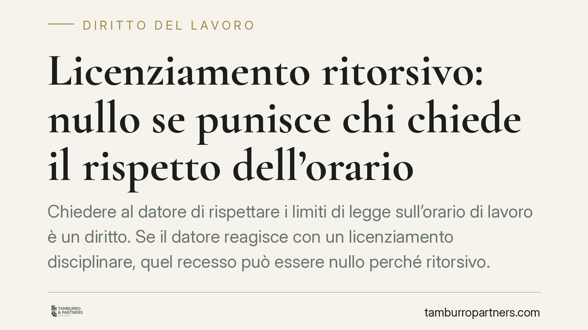

Licenziamento ritorsivo: nullo se punisce chi chiede il rispetto dell'orario
Chiedere al datore di rispettare i limiti di legge sull'orario di lavoro è un diritto. Se il datore reagisce con un licenziamento disciplinare, quel recesso può essere nullo perché ritorsivo. La Cassazione lo ha ribadito: la nullità comporta la reintegra del lavoratore, indipendentemente dal numero di dipendenti. Vediamo cosa cambia e come muoversi entro i termini di decadenza.

Il caso
Un lavoratore chiede all'azienda di rispettare i limiti normativi sull'orario di lavoro. Poco dopo riceve una contestazione disciplinare e viene licenziato. La sequenza — richiesta legittima, reazione punitiva ravvicinata — è il classico schema del licenziamento ritorsivo.
La Corte di Cassazione, Sezione Lavoro, ha confermato un principio ormai consolidato (in linea con Cass. civ., Sez. Lav., n. 9468/2019 e successive conformi): quando il recesso è determinato in modo esclusivo da un motivo illecito di rappresaglia, è nullo. E la nullità apre a una tutela più forte di quella prevista per il semplice licenziamento ingiustificato.
Ingiustificato non è la stessa cosa di nullo
È una distinzione tecnica che pesa moltissimo sul piano pratico.
Il licenziamento ingiustificato è quello privo di giusta causa o giustificato motivo: illegittimo, ma sul piano sanzionatorio spesso comporta solo un'indennità economica.
Il licenziamento nullo per motivo illecito è cosa diversa. L'art. 1345 del codice civile prevede che il contratto (e per estensione l'atto di recesso) è illecito quando le parti sono state determinate a concluderlo *esclusivamente* da un motivo illecito. Se il vero movente del licenziamento è la ritorsione, il recesso è radicalmente nullo.
Reintegra a prescindere dalle dimensioni
Qui sta il punto centrale. Per i licenziamenti nulli o discriminatori la tutela reintegratoria opera senza il cosiddetto scudo dimensionale, cioè indipendentemente dal numero di dipendenti dell'azienda.
Due i riferimenti normativi, a seconda della data di assunzione:
- per i rapporti sorti prima del 7 marzo 2015, l'art. 18, comma 1, della L. 300/1970 (Statuto dei Lavoratori);
- per gli assunti dal 7 marzo 2015, l'art. 2 del D.Lgs. 23/2015 sul contratto a tutele crescenti.
Entrambe le norme, per i licenziamenti nulli e discriminatori, dispongono la reintegrazione nel posto di lavoro e il risarcimento, senza applicare la soglia dei 15 dipendenti che normalmente delimita le tutele. Un lavoratore di una micro-impresa, quindi, può ottenere la reintegra tanto quanto quello di una grande azienda.
L'onere della prova: il vero terreno di scontro
Il nodo pratico non è il principio, ma la prova.
Grava sul lavoratore l'onere di dimostrare che il motivo ritorsivo è stato determinante ed esclusivo. Non basta che la ritorsione concorra con altre ragioni: se accanto al movente illecito esiste una giusta causa reale e autonoma, la nullità non scatta.
La giurisprudenza consente però di assolvere questo onere anche tramite presunzioni e indizi gravi, precisi e concordanti. Contano soprattutto:
- la prossimità temporale tra la richiesta del lavoratore e il licenziamento;
- la pretestuosità o l'inconsistenza della contestazione disciplinare;
- l'assenza di precedenti disciplinari coerenti con l'addebito improvviso.
Quando la contestazione appare costruita ad arte per mascherare la rappresaglia, il giudice può ritenere provato il motivo illecito. È per questo che la ricostruzione documentale della cronologia degli eventi è decisiva.
Implicazioni pratiche
Per il lavoratore che subisce un recesso sospetto, la differenza tra impugnare come *ingiustificato* o come *nullo* può valere il posto di lavoro. La strategia difensiva va impostata sin dalla prima impugnazione, valorizzando il nesso tra la richiesta legittima e la reazione datoriale.
Per il datore di lavoro, il messaggio è altrettanto netto: una contestazione disciplinare non può diventare lo strumento per punire l'esercizio di un diritto. La debolezza dell'addebito rischia di trasformarsi in prova del motivo ritorsivo.
Cosa fare in concreto
- Conserva ogni documento che dimostri la sequenza degli eventi: e-mail, messaggi, richieste scritte sull'orario, comunicazioni interne. La cronologia è il cuore della prova.
- Verifica la coerenza della contestazione: un addebito generico, tardivo o privo di precedenti va segnalato, perché può indicare pretestuosità.
- Rispetta i termini di decadenza: è opportuno attivarsi tempestivamente. L'impugnazione stragiudiziale va inviata entro 60 giorni dalla comunicazione del licenziamento; il deposito del ricorso giudiziale entro i successivi 180 giorni (art. 6 L. 604/1966, come modificato dalla L. 183/2010).
- Imposta l'azione sulla nullità, non solo sull'ingiustificatezza: è la via che consente la reintegra a prescindere dalle dimensioni aziendali.
- Fai valutare il caso a un professionista prima di scadenze e comunicazioni, così da calibrare correttamente onere probatorio e strategia.
Disclaimer
Contributo informativo a cura di Tamburro & Partners - Avv. Giuseppe Tamburro. Non costituisce parere legale.
Ogni storia di lavoro ha i suoi tempi.
Se gestisci HR e vuoi un confronto su contenzioso, ispezioni o licenziamenti, scrivi allo studio. Ti rispondiamo entro un giorno lavorativo.